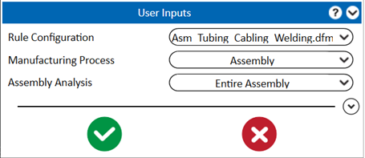

製造プロセスとして Assembly を選択することで、ユーザーはアセンブリ固有のチェックを実行できます。すべてのアセンブリ固有ルールは、Assembly、Cabling、Welding、Tubing モジュールに対して実行されます。
例えば、チューブモジュールのルールである Minimum Clearance Between Tubes は実行されます。一方で、Recommended Tube Bend Radius のようなパーツ固有のルールは実行されません。
注記:
上記のマルチプロセス解析では、パーツ固有のルールは実行できません。
